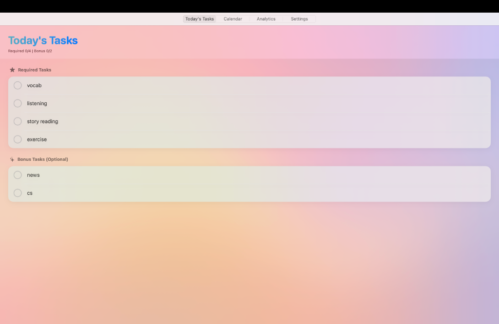
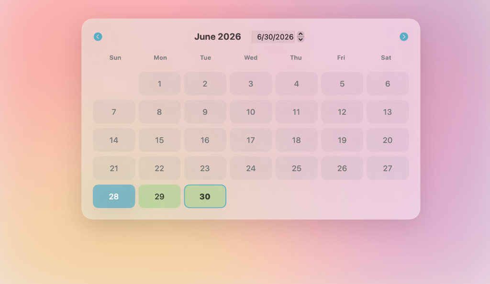
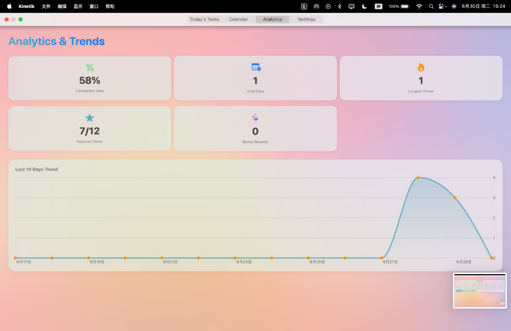
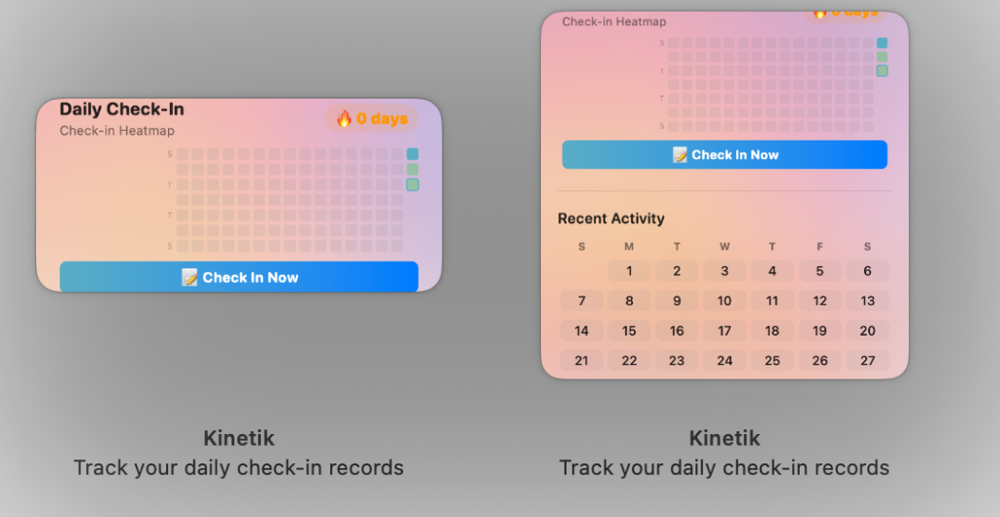
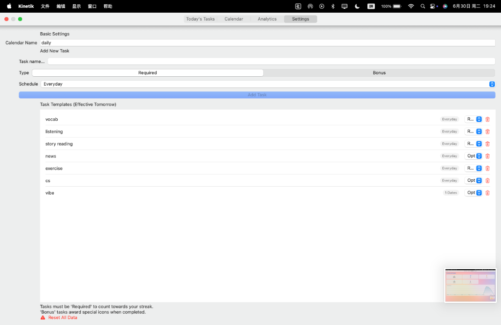

Keep Your Streak.
Master Your Habits.
Kinetik is a lightning-fast, native macOS self-discipline tool. Zero tracking, zero bloat, beautifully integrated into your desktop.

Built with Purpose
A habit tracker that respects your Mac and your privacy.
100% Local Privacy
Your data is stored locally using native file systems. No servers, no accounts, and absolutely zero analytics or user tracking.
Pure Native SwiftUI
No Electron bloat. Starts up instantly, runs smoothly with native spring animations, and uses virtually 20MB of memory.
3 AM Logical Cutoff
Study or work late past midnight? Your streak won't break. Kinetik handles day rollover logically at 3 AM.
Smart Scheduling
Create tasks that run every day, weekdays, weekends, or specific calendar dates. Streaks pause automatically on empty days.
Interactive Widgets
Keep your contribution-style heatmap directly on your desktop. Check in with a single click without opening the main app.
Detailed Analytics
Understand your consistency with custom completion rates, longest streaks, total days, and a 14-day history chart.
App Tour
Explore Kinetik's simple yet extremely powerful interface.




